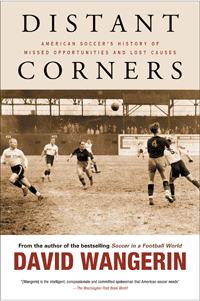

<body bgcolor="#FFFFFF" text="#000000" link="#0000FF" vlink="#CC0000" alink="#CC0000"><center><hr width="350" size="1" align="center" noshade>From bestselling author David Wangerin, a history of America's curious relationship with the "beautiful game"<hr width="350" size="1" align="center" noshade><p><a href="https://cdcshoppingcart.uchicago.edu/Cart/ChicagoBook.aspx?ISBN=9781439906309&&PRESS=temple" target="_top">Buy this book!</a> | <a href="https://cdcshoppingcart.uchicago.edu/Cart/Cart.aspx?PRESS=temple" target="_top">View Cart</a> | <a href="https://cdcshoppingcart.uchicago.edu/Cart/Cart.aspx?PRESS=temple" target="_top">Check Out</a></p><p></p></center><!--none//--><h1>Distant Corners</h1>
<H2>American Soccer's History of Missed Opportunities and Lost Causes</H2>
<h3>David Wangerin</h3>
<P>cloth 1-4399-0630-0 $50.50, Apr 11, <FONT COLOR=#990033>Available</FONT>
<br>paper 1-4399-0631-9 $24.95, Feb 14, <FONT COLOR=#990033>Available</FONT>
<br>Electronic Book 1-4399-0632-7 $24.95 <FONT COLOR=#990033>Available</FONT>
<BR> 264 pp
6x9
18&nbsp;halftones
</P><BLOCKQUOTE><I>"David Wangerin�s </i>Distant Corners<i> is a sprawling, authoritative work of historiography. Among other things, he deftly lays out the case for an �American style� of play�the Holy Grail of the U.S. soccer intelligentsia. He demonstrates the �why� and the �how� of this by describing in concrete (and sometimes even reverential) terms the convergence of factors that led American soccer to look like such a hodge-podge compared to, say, the more �scientific� English game. As a work of serious scholarship, Wangerin�s history will stand without peer for a long time."</I><br>&#151<b>Jim Haner</b>, author of <I>Soccerhead</I></I></BLOCKQUOTE>
<p>Despite its struggle for popular acceptance, soccer in the United States has a rich history, which David Wangerin, in this, his follow up to the bestselling <i>Soccer in a Football World</i>, tells in engaging detail. Wangerin profiles Tom Cahill, the almost-forgotten �father of American soccer,� and writes passionately about the 1979 North American Soccer League season, the high-water mark of the game in the twentieth century.</p>
<p>Wangerin describes the fluctuating American appetite for soccer over the years. He chronicles the game at the college and professional levels and describes the city of St. Louis's unique historic attachment to the sport. According to Wangerin, the time is ripe for American fans to look into their own history and recognize the surprisingly deep connection their country has to soccer. <i>Distant Corners</i> is the perfect start to that effort for even the most casual fan of the sport.</p>
<BR>&nbsp;<h2>Excerpt</h2><P>Excerpt available at <a href="http://www.temple.edu/tempress">www.temple.edu/tempress</a></p>
<BR>&nbsp;<h2>Reviews</h2>
<p><i>"Wangerin presents a remarkable history of soccer in America. The seventh book in Temple�s 'Sporting' series is one of the best recently published soccer books. Wangerin (</i>Soccer in a Football World<i>) provides a look at American soccer from the inside�not simply the records and statistics but the behind-the-scenes evolution of the U.S. game through club, college, and pro soccer. Also featured is the role of the city of St Louis in the rise of American soccer. VERDICT Best of all, Wangerin�s passion for the game combined with his keen insight make his book an essential read for soccer and sports fans everywhere. Highly recommended." </i><br>&#151<b><i>Library Journal</i></b>
<p><i>"The best thing about this book is that it contains information you will not find anywhere else. You can tell that Wangerin was tireless in his research and that he was a man on a mission, a mission to thoroughly explain the meaning of soccer in America.... This title is a must read for soccer fans. It is an intelligent, passionate, and detailed discussion of the history of soccer in America. All of the highs and lows, triumphs and failures, are thoughtfully chronicled by Wangerin, a diehard supporter of Raith Rovers in Scotland. If you liked </i>Soccer in A Football World<i> or </i>Once in a Lifetime<i>, you will love </i>Distant Corners<i>."</i><br>&#151<b><i>International Soccer Network</i></b>
<p><i>"In this worthy successor to his </i>Soccer in a Football World<i>, Wangerin describes the vicissitudes of American soccer in seven chronologically and thematically linked chapters.... Wangerin's research is solid (he looked at league documents, statistics, and so on), and the book is well written, has a good narrative line, and includes black-and-white photos. Summing Up: Recommended."</i><br>&#151<b><i>Choice</i></b>
<p><i>"Wangerin has a stoical but cheerful approach to US football history, and clearly enjoys unearthing people, games, and anecdotes long since confined to the pages of yellowing local newspapers.... The final two chapters really make this book sing.... The flops, failures, flukes and flashes of the bust-boom-bust NASL are a largely unmined treasure of football stories." </i><br>&#151<b><i>When Saturday Comes</i></b>
<p><i>"With </i>Distant Corners<i>, Wangerin has established himself as the preeminent scholar of the history of soccer in the United States. His primary research is extensive and his writing is clear."</i><br>&#151 <b><i>ESPNsoccernet.com</i></b>
<p><i>"[R]ichly researched....By allowing himself to provide in-depth analyses of significant individuals, teams and seasons, Wangerin retells the lost story of soccer in America in a way that allows leading figures to emerge from the shadows, perchance to move into the light as beacons for a future that will be enriched with a sense of legacy and a greater awareness of prior successes and failures. </i>Distant Corners<i> should appeal to those with an interest in soccer�s challenge to American exceptionalism as well as those who seek a more full and accurate representation of the history of modern sport."</i><br>&#151 <b><i>Soccer and Society</i></b>
<p><i>"The book shares some of the in-depth stories of key moments in U.S. soccer history where the game could have taken off, but for various reasons did not.... If this book is to be taken as a chronicle of stories forgotten and times unremembered, it is an absolute gem.... [I]t is an essential read for anyone who wants to know the real history of soccer in this football world."</i><br>&#151 <b><i>World Soccer Talk</i></b>
<p><i>"Wangerin examines the starts and stops that have marked the Sisyphean development of soccer on American soil since the game first tried to take root in the 19th century. The book serves as a crucial follow-up to Wangerin�s first monograph, </i>Soccer in a Football World: The Story of America�s Forgotten Game<i> (Temple University Press, 2008), one which allowed the author to expand further upon several pivotal developments, individuals, teams, and regions in the story of American soccer history.... </i>Distant Corners<i> remains a timely work that deftly highlights the crests and troughs of soccer�s sputtering growth as a mainstream sport in the United States. Wangerin left behind a critical contribution that will continue to dispel myths and enrich public understanding of the long and contentious history of American soccer."</i><br>&#151 <b><i>Sport in American History</i></b>
<BR>&nbsp;<h2>Contents</h2><P>
<p>Preface: Worthy Diversions<br>
A Note on Terminology<br>
Acknowledgments<br>
1. �Here They Come!� Pilgrims, Corinthians, and the �Foreign Game� as Invader<br>
2. Foreign Bodies and Freezing Fans: The Births of the USFA and the National Challenge Cup<br>
3. Bullets: Thomas William Cahill, 1863�1951<br>
4. Mild Bill: Bill Jeffrey, Penn State, and College Soccer between the Wars<br>
5. Dash, Desperation, and Deviltry: St. Louis and the �American Style�<br>
6. California Gold: Remembering the Clippers<br>
7. Shot Out in Jersey: NASL 1979�The Beginning of the End<br>
Index</p>
</P><BR>&nbsp;<H2>About the Author(s)</H2>
<P><strong>David Wangerin</strong> (1962-2012) the author of <i><a href="1985_reg.html" target="_top">Soccer in a Football World: The Story of America's Forgotten Game</a></i> (Temple), contributed to the British soccer magazine <i>When Saturday Comes</i> for more than two decades and had an affection for Raith Rovers.</P>
<BR><H2>Subject Categories</H2>
<p><A HREF="/tempress/sports.html" TARGET="_top">Sports</a>
<BR><A HREF="/tempress/american.html" TARGET="_top">American Studies</a>
<BR><A HREF="/tempress/general.html" TARGET="_top">General Interest</a>
</p>
<BR><h2 class="inpageheading">In the series</H2>
<P><I><a href="http://www.temple.edu/tempress/sporting.html" onMouseOver="window.status='Click for other books in this series!'; return true;" onMouseOut="window.status=''; return true;" target="_top">Sporting</a></i>, edited by Amy Bass.
</p><p>As an international cultural activity for athleticism, spectatorship, and global cultural exchange, sport is unmatched by any other force on earth. And yet it remains a consistently understudied dimension of history and cultural studies. <i>Sporting</i>, edited by Amy Bass, aims to contribute to the study of sport by publishing works by people across a range of disciplines, by professional sportswriters, and by athletes to add substance to our still emerging notion of globalization.</p>
<p align="center"><a href="https://cdcshoppingcart.uchicago.edu/Cart/ChicagoBook.aspx?ISBN=9781439906309&&PRESS=temple" target="_top">Buy this book!</a> | <a href="https://cdcshoppingcart.uchicago.edu/Cart/Cart.aspx?PRESS=temple" target="_top">View Cart</a> | <a href="https://cdcshoppingcart.uchicago.edu/Cart/Cart.aspx?PRESS=temple" target="_top">Check Out</a></p><p><font face="Arial" size="1"><a href="copyright.html" onMouseOver="window.status='Web Copyright Policy';return true;" onMouseOut="window.status=''" title="Web Copyright Policy">&copy;</a> 2016 <a href="http://www.temple.edu" target="new" onMouseOver="window.status='Link to Temple University home page';return true;" onMouseOut="window.status=''" title="Link to Temple University home page">Temple University</a>. All Rights Reserved. http://www.temple.edu/tempress/titles/2143_reg.html</font></p>